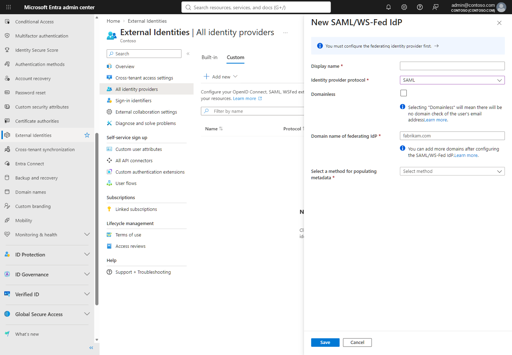
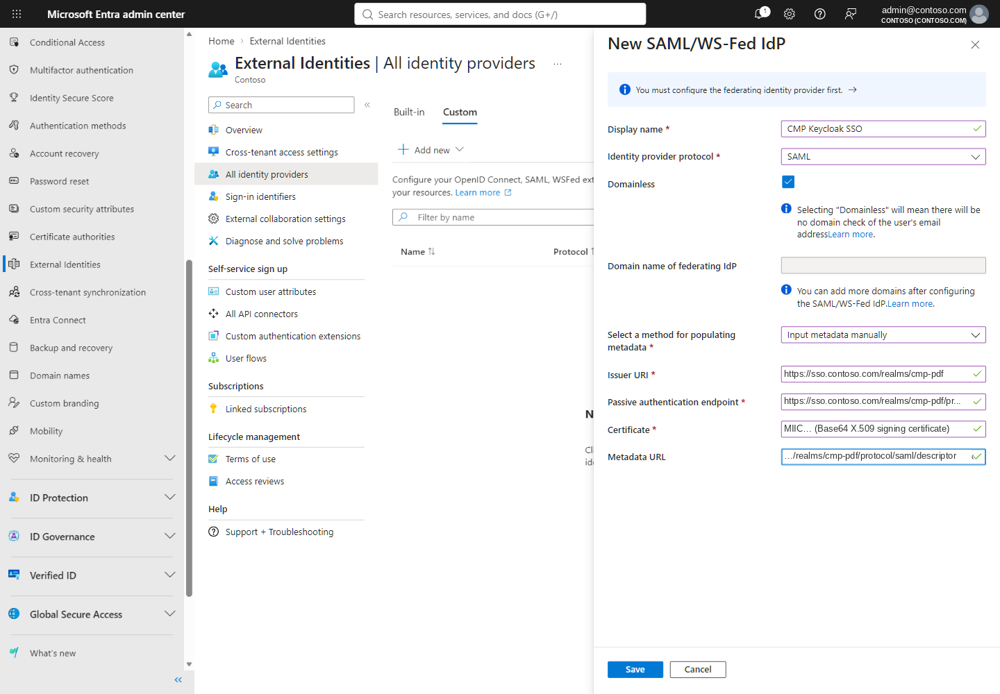
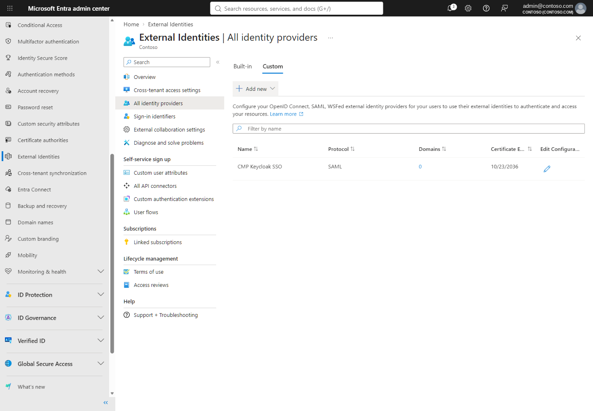

G4 · Create the Domainless SAML identity provider in Entra ID
Configure Microsoft Entra External Identities to trust the Keycloak realm as a Domainless SAML IdP, with the exact admin-center steps, captures and pitfalls.
Outcome#
A Domainless SAML/WS-Fed identity provider in Contoso's Entra tenant whose Issuer URI is the Keycloak realm, so that invited guests can authenticate at Keycloak regardless of their email domain.
Before you start#
- Role: at least External Identity Provider Administrator (Learn).
- Inspect All identity providers › Custom. Only one wildcard (Domainless) IdP is supported per tenant (Learn) — do not replace an existing one.
- Have the G3 preview output open. Do not convert any verified Contoso domain to federation, and do not change MFA or cross-tenant policies as part of this step.
Steps in the Microsoft Entra admin center#
- 1Open the custom providers list
Browse to Entra ID › External Identities › All identity providers, select Custom, then Add new › SAML/WS-Fed (Learn).
- 2Name, protocol and Domainless
Display name
CMP Keycloak SSO, protocol SAML, tick Domainless — "Selecting Domainless enforces no domain check of the user's email address" (Learn). The domain field stays empty.
PoC capture · sanitized Figure 1. The New SAML/WS-Fed IdP pane with the Domainless option, before any value is saved. - 3Enter metadata manually
Select Input metadata manually and paste the G3 values: Issuer URI
https://sso.contoso.com/realms/cmp-pdf, passive authentication endpointhttps://sso.contoso.com/realms/cmp-pdf/protocol/saml, the Base64 certificate, and metadata URLhttps://sso.contoso.com/realms/cmp-pdf/protocol/saml/descriptor(optional, strongly recommended for certificate renewal (Learn)).
PoC capture · sanitized Figure 2. Manual metadata fields prepared with the reviewed values (Contoso host substituted). - 4Save and wait
Select Save. Allow 5–10 minutes before any redemption test (Learn).

PoC capture · sanitized Figure 3. The custom provider list now contains CMP Keycloak SSO (SAML). - 5Read back Domainless
Open the provider's domain details: Domainless is ticked and no domain is listed.

PoC capture · sanitized Figure 4. Saved configuration read back: Domainless selected; native domain authentication unchanged. - 6Verify with Graph (read-only)
Run G3 with
-Verify; it must match exactly one federation by issuer, with the same protocol, endpoint and certificate.


Known issues and pitfalls#
| Symptom | Cause / action |
|---|---|
| IdP configuration disappears after typing a domain | Known issue: "The IdP configuration gets deleted if an invalid domain name is entered even when the IdP config is not saved" (Learn). Leave the domain empty for Domainless. |
| Metadata file upload not possible from your workstation | Use Input metadata manually with the validated G3 values (what the PoC did). |
| Issuer rejected by the portal | The Issuer must be a valid absolute URI per RFC 3986; single words are rejected (Learn). |
| Certificate expires or is rotated early | With a metadata URL, Entra renews at expiry; early rotation needs a manual update (G9). |
| Removing the federation | Guests who redeemed with it can no longer sign in until their redemption status is reset (Learn). |
Figures 3 and 4 prove the configuration exists. They do not prove a guest can sign in — that is G8.